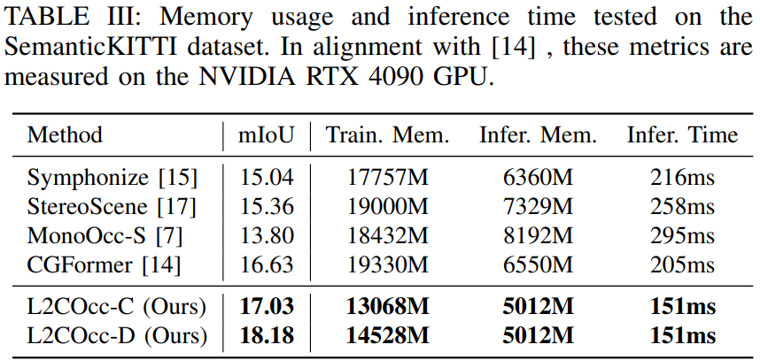

Experience



Scene Semantic Completion (SSC) constitutes a pivotal element in autonomous driving perception systems, tasked with inferring the 3D semantic occupancy of a scene from sensory data.To improve accuracy, prior research has implemented various computationally demanding and memory-intensive 3D operations, imposing significant computational requirements on the platform during training and testing.This paper proposes L2COcc, a lightweight camera-centric SSC framework that also accommodates LiDAR inputs.With our proposed efficient voxel transformer (EVT) and three types of cross-modal knowledge modules (FSD, TPVD, PAD), our method substantially reduce computational burden while maintaining high accuracy. The experimental evaluations demonstrate that our proposed method surpasses the current state-of-the-art vision-based SSC methods regarding accuracy on both the SemanticKITTI and SSCBench-KITTI-360 benchmarks, respectively. Additionally, our method is more lightweight, exhibiting a reduction in both memory consumption and inference time by over 25%.
BibTex Code Here